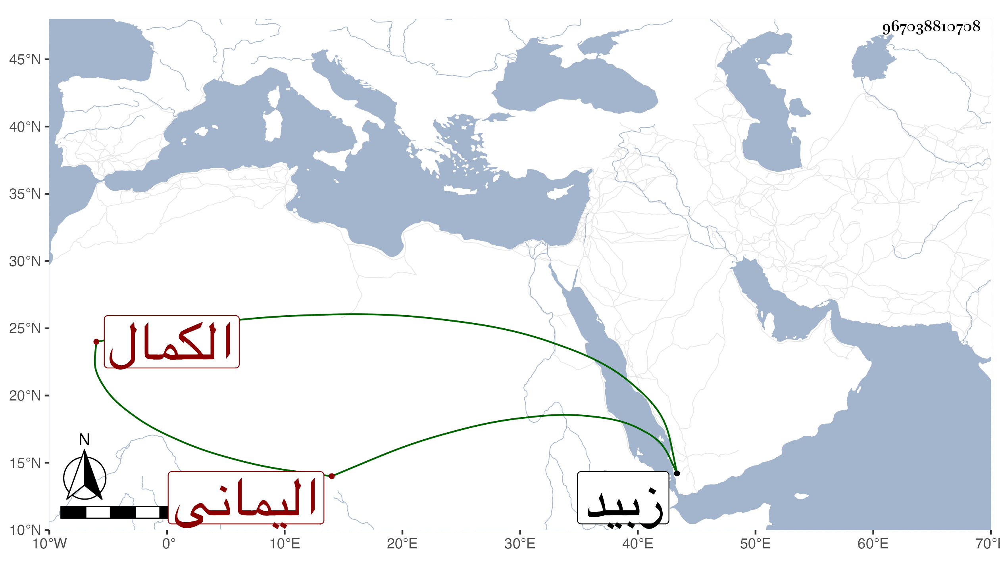

0902Sakhawi.DawLamic.ITO20230111-ara1.EIS1600.967038810708
Biography ID: 967038810708
748
موسى بن أحمد بن علي بن عجيل الكمال اليماني والد أحمد وعبد اللطيف الماضيين . ولد سنة اثنتين وثمانمائة واشتغل وتميز في الفقه وحضر مجالس الجمال الطيب الناشري القاضي وأذن له في الإفتاء ، ودرس وأفتى ولما ملك بنو طاهر زبيد أضيف إليه نظر المدرسة الحسينية وتدريسها إلى أن مات في يوم الجمعة حادي عشر المحرم سنة تسع وسبعين ، وقد كتب تصحيحا على الوجيز استمده من تصحيح التقي عمر الفتي وقطعة على المنهاج رحمه الله .
